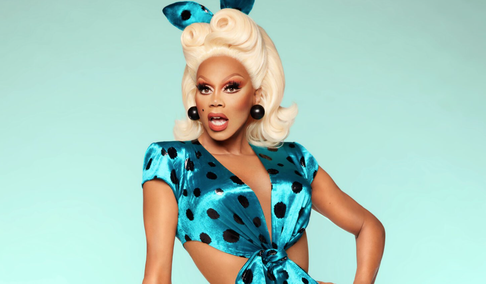

RuPaul, is an American drag queen, television judge, recording artist, and model. He is best known for producing, hosting,and judging the reality competition series RuPaul's Drag Race. RuPaul is considered the most commercially successful drag queen in the United States, with Fortune noting him as "easily the world's most famous drag queen." For his work on RuPaul's Drag Race, he has received eleven Primetime Emmy Awards, becoming the most-awarded person of color in the history of the Primetime Emmys. In 2017, he was included in the annual Time 100 list of the most influential people in the world. Outside of film and television, he also continues to write and record music; he has released fourteen studio albums as of 2022.
At 15, RuPaul and his sister Renetta moved to study performing arts in Atlanta, Georgia. In the ensuing years, RuPaul struggled as a musician and filmmaker during the 1980s, where he worked at Atlanta's famed Plaza Theatre. In 1982, he debuted on an Atlanta public access variety show called The American Music Show, on which he made frequent appearances over the years. RuPaul's first prominent national exposure came in 1989 dancing as an extra in the video for "Love Shack" by The B-52's. He became a spokesperson for MAC Cosmetics in 1994, raising money for the Mac AIDS Fund and becoming the first drag queen to land a major cosmetics campaign. He later received his own talk show on VH1 called The RuPaul Show, which he hosted for over 100 episodes while co-hosting the morning radio show on WKTU with Michelle Visage.
In mid-2008, RuPaul began producing RuPaul's Drag Race, a reality television game show which aired on Logo in February 2009. The premise of the program has drag queens compete to be selected by RuPaul and a panel of judges as "America's next drag superstar". has gone on to produce fourteen seasons in the United States. The show has also seen success internationally, with several international variants of the show being made, such as RuPaul's Drag Race UK and Canada's Drag Race. This has also inspired several spin-offs of the main show, including RuPaul's Drag U, RuPaul's Drag Race All Stars, and RuPaul's Secret Celebrity Drag Race.
Shhh! A link to our secret page...